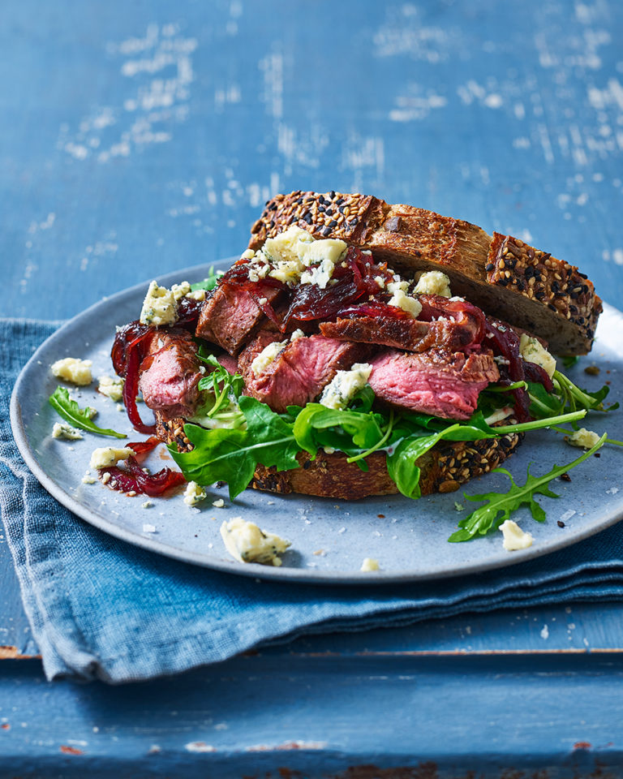

Steak

Description
Make the ultimate steak sarnie for one with our not-for-sharing recipe. Layer up good bread
and juicy steak with sticky onions and blue cheese.Not dining solo? Try our steak sandwiches
with sweet potato fries recipe for two.
Ingredients
- 1 British bavette, rump or sirloin steak (about 150g)
- Vegetable oil for brushing
- Knob of unsalted butter
- 1 small red onion, sliced
- 2 thyme sprigs
- 1 tbsp red wine vinegar or balsamic vinegar
- 1 tbsp dark brown sugar
- 1 tbsp good quality mayonnaise
- 1/2 tbsp dijon/wholegrain mustard
- 1/2 tsp runny honey
- 2 slices bread, toasted
- Handful leafy greens
- 20-30g stilton/blue cheese
Steps
- Set a heavy-based frying pan over a high heat. Pat the steak dry with kitchen paper, then brush with a little oil and season with a pinch of salt. Cook the steak for 3-4 minutes on each side for medium (or less/more until cooked to your liking), then leave to rest in a warm place.
- Add a splash of water to the pan, then scrape the bottom with a wooden spoon to lift any charred goodness (see Know-how). Turn the heat down to low medium, add the butter and, once melted, stir in the onion, thyme and a little salt. Cook, stirring regularly, for 10-15 minutes until softened and beginning to colour. Stir in the vinegar and sugar, then cook for 5 minutes more until reduced and sticky.
- Meanwhile, mix the mayo, mustard and honey in a small bowl. Slice the rested steak into strips. Spread the toast with the mustard mayo, then top one slice with the leaves, steak and onions (discard the thyme). Crumble over the cheese, then top with the other slice and serve.
-Bonne appétit!